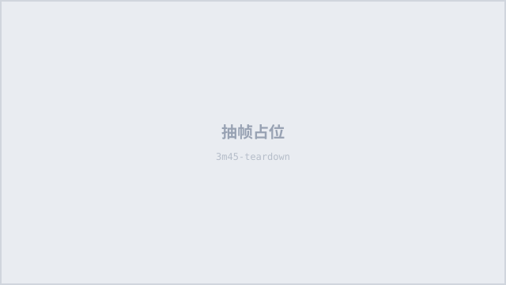

8 分 50 秒，不先讲 TCL，先用 3 分 55 秒把「Mini LED 该怎么判断」讲清楚，再用并排实拍 + 拆解素材把 Samsung M80H 打成「假 Mini LED」。这是本次比稿里「单条视频洞察」最值得拿给客户看的一条真实样例。
先让观众相信「Mini LED 这个标签不可信」，再证明「TCL P8L 是唯一符合新标准的那个」。9 天 29.6 万播放 / 45.4 万粉丝 = 65.2% 粉丝播放比，在 45 万粉英国科技频道里属于爆款水平；点赞率 1.45%，评论虽少但购买意向信号密集。
标题：Watch This Before You Buy a New TV!!
描述区：三条联盟链接（Amazon / Currys / AO，bit.ly 短链）+ 10 个章节 + LIKE / SUBSCRIBE + 标签 #TCLP8L #TCL #MiniLED #QDMiniLED #BlackFriday
对比机型：TCL P8L 65" vs Samsung M80H 55"（拆解素材为 55" 版本）· 同源、同画质模式、暗室并排
手法：门店实拍代入 → 痛点共鸣 → 认知冲突 → 悬念提问，37 秒四步完成。
0:00 直接给 Currys 门店外景，主持人走进去——不是「今天测一台电视」，而是「你正在买电视」。0:05–0:15 店内穿行，LG OLED 展台、三星价格标签特写，把「满墙电视 + 看不懂的型号」的真实场景铺满。0:07 起的画外音精准戳痛点：每个电视下面都是不同的字母组合，全在跑 showroom mode，亮度拉到 11，最后只能按预算挑一台。
0:24 转折：“even if you do try to understand what you're buying, terms like OLED, LED, and mini LED don't always show you the full picture.” 紧接着 0:37 给出全片最强的钩子：两台都叫 Mini LED 的电视，背板灯珠排布完全不同——左机只有两排灯珠穿过中间，右机分布在整个面板。1:05 补一刀：“So, what does mini LED actually mean, and can you see the difference when you're watching the telly?”
手法：先立标准，再上产品。TCL P8L 直到 3 分 55 秒才第一次出现，一句「Take this TCL P8L」带出型号。
前 3 分 55 秒只做一件事：把观众的评判体系换掉。先讲 LED / OLED / Mini LED 的区别（1:15–2:02），再讲 full array local dimming 的分区控光（2:02–3:07），然后连续四个「Mini LED 不告诉你」：不告诉你用了多少颗 LED、不告诉你灯珠放在哪、不告诉你多少分区能独立调光、更不保证黑位（3:07–3:55）。
等观众开始怀疑「Mini LED」这个词时，TCL P8L 才以「QD Mini LED + 背光实现」的身份登场。产品不是被推销的，是被当作「标准的答案」引出来的。3:55 的转场也很有设计：前一个镜头是复古霓虹灯画面，下一个镜头直接切到拆开的背板——从「画面好看」切到「为什么好看」。

顺序：品类问题 → 技术原理 → 物理差异 → 实际画面 → 结论。每一步都在为下一步提供「证据」，不是参数罗列。
卖点表达全部用「对比式翻译」，不说「TCL 亮度高」，而说「同一个白点，三星明显更暗」；不说「TCL 控光好」，而说「三星的光溢到了本应全黑的区域」。观众不需要懂参数，只需要看画面。
场景覆盖「买前—买中—买后」全链路。
尤其值得注意的是「暗室 + 人体剪影」：主持人站在两台电视中间形成纯黑剪影，既提供了「绝对黑」的参照，又让观众代入「我坐在客厅中间看」的视角。
节奏设计：钩子快、证据慢、结尾回升。全片 97 个镜头切换，平均 5.4 秒/镜头；前 30 秒 13 个切点（2.3 秒/镜头），4:30–7:00 只有 13 个切点（平均约 10.7 秒/镜头）——把长镜头留给并排对比和拆解，让观众「看清楚」。
转场类型在四种素材之间循环：实拍（门店 / 暗室）→ 3D 动画（LED 排布 / 分区控光）→ 拆解素材（AP Tech）→ talking head（主持人）。关键转场三处：0:37 从门店直接切暗室（场景反差）；1:15 实拍切 2D 动画（概念切换）；5:41 从屏幕对比切拆解（从「果」到「因」）。
一个有意思的细节：1:50 的动画把 "edge lit" 拼成了 "egde lit"，评论区有人专门留言 “egde lit... nice.”（6♥）——小失误反而成了互动点，但品牌方不应主动复制。
这是全片最强的一段：型号级点名 + 三重证据链 + 第三方素材背书。
最狠的一刀不是画面，是那句提问：“So, does this mean the Samsung isn't really a mini LED television?”（6:46）——不直接下结论，让观众自己得出「三星在收智商税」。再用「LED 大灯」类比补刀：“Cool story, bro, but where are they? How many of them are there and how bright do they go?”
同时用「诚实感」对冲攻击性：“I'm not saying the difference is enormous in every single scene because it isn't.”（5:20）——承认差异不是每个场景都巨大，反而让后面的结论更可信。
视频内零硬广，CTA 全部放在描述区和评论区。
结尾原话：“So, with TVs, don't buy the badge. Understand and buy the implementation.”（8:18）然后一句 “Peace” 收尾，没有「点击下方链接」「限时优惠」。描述区放三条联盟链接（Amazon / Currys / AO）+ 章节 + LIKE / SUBSCRIBE + #BlackFriday 标签。
这种「软收口」适合测评调性，但转化路径偏弱——观众要自己滚到描述区。评论区反而自然长出了购买意向提问（“Would you recommend it for everyday streaming?”），说明内容本身已经把观众推到决策边缘。
读法：开场 30 秒用 13 个切点把注意力抓住；4:30–7:00 证据段只切 13 次（平均约 10.7 秒/镜头），长镜头让观众自己看差异；7:00 后节奏回升，进入结论与收口。
「两台都叫 Mini LED，内部完全不同」——观众立刻想知道「我买的那台属于哪种」。
Samsung M80H 是英国同价位在售机型，点名叫板，既具体又有争议性，评论区自然吵起来。
门店实拍 + 同框并排 + 暗室 + 拆解 + 第三方素材，五层证据叠在一起，观众很难说「你收钱了乱讲」。
「Don't be fooled」「don't buy the badge」——不是卖 TCL，是帮你别被标签骗。立场先赢，产品后赢。
10 月 31 日发布，黑五前 4 周，描述区直接挂 Amazon / Currys / AO 三条链接，购物意图最强的时间点。
有人说是 TCL 广告，有人反驳三星，有人问「P 系列适合流媒体吗」——争议 + 购买意向同时存在，互动被推高。
这条视频值得 TCL 学的地方，不是「把竞品骂得多狠」，而是先把评判标准变成对自己有利的形状，再让竞品站在标准下面被审视。同样的打法可以复用到 X11L / SQD 的英国、法国、西班牙市场：先讲「真 Mini LED 看什么」，再讲「谁符合」，最后才讲「TCL 是哪个」。
评论区侧写 · 118 条
抓取 2026-11-09 · 按点赞排序